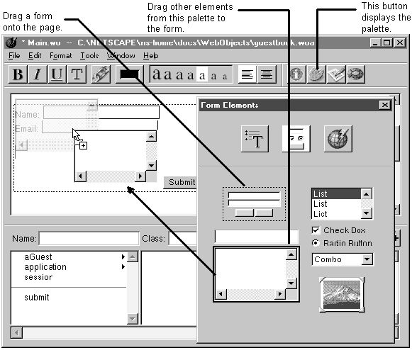

Table of Contents
Table of Contents
Place the cursor where you want the form to appear on the page.
Drag the form element from the Form Elements palette onto the page.
Place the cursor inside the form.
Drag other elements from the Form Elements palette into the form.

The easiest way to create a form is to start with the pre-made form on the Form Elements palette. This element creates a form with two text fields and Submit and Reset buttons. After placing the form element, you can modify it by adding or removing elements.
When you use the pre-made form, WebObjects Builder inserts a <FORM> tag before the first text field and a </FORM> tag after the Reset button, specifying a single form. If you add form elements without using the pre-made form (for example, if you add a text field to an empty page) or if you add form elements outside of the form, WebObjects Builder assumes you want to create a new form and places <FORM> tags before and after the element.
The Form Elements palette can generate either HTML form elements or their corresponding WebObjects dynamic elements (WOTextField, WOSubmitButton, and so on). To generate the WebObjects dynamic element, all you have to do is create a binding for the element. If you don't create a binding, WebObjects Builder generates an HTML form element.
For example, if you drag a text field to a component and then immediately save the component, the text field is an HTML text field:
<FORM><INPUT type=text></FORM>
If you bind the text field to a value and save the component again, WebObjects Builder converts the HTML text field into a WebObjects WOTextField element:
<FORM>
<WEBOBJECT name=TextField1>
<INPUT type=text value = guest>
</WEBOBJECT>
</FORM>
Tip: HTML forms don't allow you to have multiple submit buttons in a single form, but the WebObjects WOForm element does. If you want multiple submit buttons in a form, bind the multiplesubmit attribute of WOForm to the value 1. See "Binding Elements Using the Inspector" to learn how to do this. (To create the second submit button, use the menu command Format->Form->Add Submit Button.)
 Next Section
Next Section